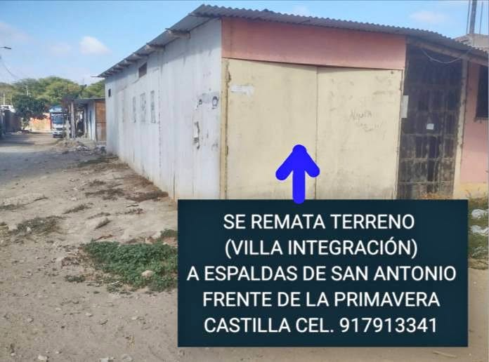

Precio desconocido 2 ha

VENDO TERRENO EN ESQUINA Medidas: 5 m de ancho por 16 m de fondo. Cuenta con agua y luz. La propiedad tiene Constancia ( Papeles en Regla ). La Propiedad es de material de triplay con techo de calamina y cuenta con sala, comedor, cocina, 2 habitaciones, lavandería y baño. El terreno se encuentra en esquina y frente a un parque ( Buena Ubicación ). UBICACIÓN: Asoc. VILLA INTEGRACIÓN - Castilla - Piura. Al costado de San Antonio ( Frente de la Primavera ). Interesados Imbox y celular [hidden information].